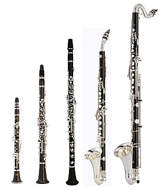

This is my website about a few different types of clarinets and the differences between them:
Bb Clarinet Link:
Bb Clarinet
Bass Clarinet Link:
Bass Clarinet
Alto Clarinet Link:
Alto Clarinet
Contrabass Clarinet Link:
Contrabass Clarinet
The links will tell you about the different prices, difficulty, and how many octaves the instruments can play.
